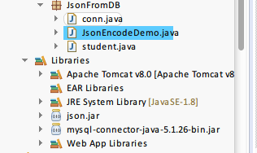
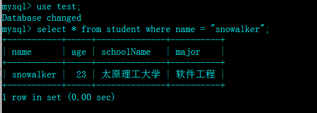
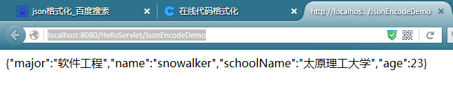

package JsonFromDB;
import java.sql.Connection;
import java.sql.DriverManager;
public class conn {
public Connection getCon() {
try {
Class.forName("com.mysql.jdbc.Driver");
String url = "jdbc:mysql://localhost/test?useUnicode=true&characterEncoding=utf-8";
String user = "snowalker";
String password = "admin";
Connection conn = DriverManager.getConnection(url, user, password);
System.out.println("connnection success");
System.out.println(conn.getMetaData().getURL());
return conn;
} catch (Exception e) {
e.printStackTrace();
return null;
}
}
}
package JsonFromDB;
public class student {
//姓名
private String name;
//年龄
private int age;
//学校
private String schoolName;
//专业
private String major;
public String getName() {
return name;
}
public String setName(String name) {
return this.name = name;
}
public int getAge() {
return age;
}
public int setAge(int age) {
return this.age = age;
}
public String getSchoolName() {
return schoolName;
}
public String setSchoolName(String schoolName) {
return this.schoolName = schoolName;
}
public String getMajor() {
return major;
}
public String setMajor(String major) {
return this.major = major;
}
}
package JsonFromDB;
import java.io.IOException;
import java.io.PrintWriter;
import java.sql.SQLException;
import javax.servlet.ServletException;
import javax.servlet.annotation.WebServlet;
import javax.servlet.http.HttpServlet;
import javax.servlet.http.HttpServletRequest;
import javax.servlet.http.HttpServletResponse;
import org.json.JSONException;
import org.json.JSONObject;
import com.mysql.jdbc.Connection;
import com.mysql.jdbc.Statement;
import formVerify.conn;
@WebServlet("/JsonEncodeDemo")
public class JsonEncodeDemo extends HttpServlet {
private static final long serialVersionUID = 1L;
public JsonEncodeDemo() {
super();
}
protected void doGet(HttpServletRequest request, HttpServletResponse response)
throws ServletException, IOException {
this.doPost(request, response);
}
protected void doPost(HttpServletRequest request, HttpServletResponse response)
throws ServletException, IOException {
request.setCharacterEncoding("UTF-8");
// 设置响应的文本类型为HTML，字符编码为UTF-8
response.setContentType("text/html;charset=UTF-8");
response.setCharacterEncoding("UTF-8");
PrintWriter out = response.getWriter();
//连接数据库
java.sql.ResultSet rs = null;
Connection connection = (Connection) new conn().getCon();
System.out.print("数据库连接成功");
Statement statement;
//获取数据库中数据到对应字段
student student = new student();
String name = null;
int age = 0;
String schoolName = null;
String major = null;
try {
statement = (Statement) connection.createStatement();
rs = statement.executeQuery("select * from student where name = 'snowalker'");
while (rs.next()) {
System.out.println();
name = student.setName(rs.getString("name"));
age = student.setAge(rs.getInt("age"));
schoolName = student.setSchoolName(rs.getString("schoolName"));
major = student.setMajor(rs.getString("major"));
}
} catch (SQLException e) {
// TODO Auto-generated catch block
e.printStackTrace();
}
//组装json数据
JSONObject student1 = new JSONObject();
try {
student1.put("name", name);
student1.put("age", age);
student1.put("schoolName", schoolName);
student1.put("major", major);
} catch (JSONException e) {
// TODO Auto-generated catch block
e.printStackTrace();
}
out.print(student1);
}
}

